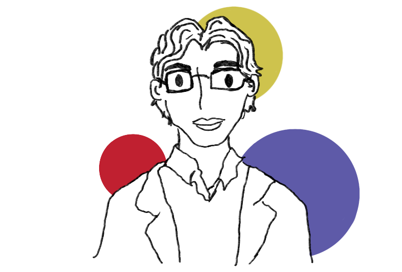

My name is Aidan French, and I am a designer working across editorial, identity, and experimental design. My practice emphasizes playful experimentation, rigorous typography, and visual craft. I’m interested in creating the conditions for identities and visual systems to grow and evolve, rather than simply giving them a style.
Rooted in research and formal experimentation, my work explores how strong concepts can be translated into equally compelling visual forms. I believe that design should do more than communicate or solve problems; it should also provoke curiosity, challenge assumptions, and pose new questions.Much of my personal work investigates hidden forms of knowledge and the ways design shapes our understanding of the world around us. Rather than viewing design as a neutral tool for delivering information, I approach it as a cultural practice that actively constructs meaning. Drawing from archives, material histories, and everyday objects, I use design to explore the relationships between people, culture, and the systems that shape our lives.
DOWNLOAD MY RESUME